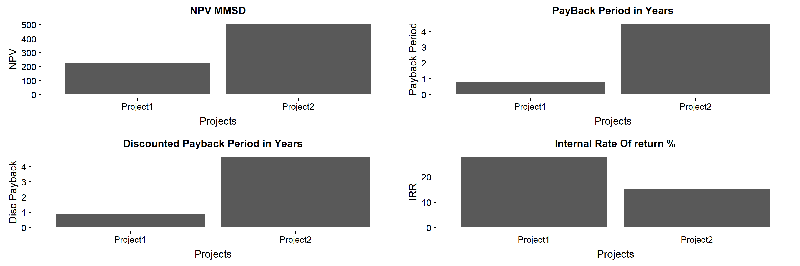

1. Calculating the Discounted Cash Flow DCF
To understand the time value of Money for the two projects.
### Calculating the Discounted Cash Flow "DCF"
### the interest rate given is 0.06 "6%"
CDF.P1 <- dcf(Project1, r= 0.06, t0=TRUE)
cdfProject1<- data.frame(Time.Evaluation, Project1,CDF.P1)
knitr::kable(cdfProject1, digits = 2)
| 1 |
-1000 |
-1000.00 |
| 2 |
1250 |
1179.25 |
| 3 |
10 |
8.90 |
| 4 |
10 |
8.40 |
| 5 |
20 |
15.84 |
| 6 |
20 |
14.95 |
CDF.P2 <- dcf(Project2, r= 0.06, t0=TRUE)
cdfProject2<- data.frame(Time.Evaluation, Project2,CDF.P2)
knitr::kable(cdfProject2, digits = 2)
| 1 |
-1000 |
-1000.00 |
| 2 |
-10 |
-9.43 |
| 3 |
0 |
0.00 |
| 4 |
10 |
8.40 |
| 5 |
20 |
15.84 |
| 6 |
2000 |
1494.52 |
2. Claculating Net Present Value NPV
To understand the Whole project monetry value in the present day.
### NPV Calculations
npv.p1 <- npv(Project1, r=0.06, t0 = TRUE)
npv.p2 <- npv(Project2, r=0.06, t0 = TRUE)
npv.all <- data.frame(npv.p1,npv.p2)
knitr::kable(npv.all, digits = 2)
3. Calculating the Payback Period PBP
### PayBack Period Calculations
pbp.p1<- pbp(Project1)
pbp.p2<- pbp(Project2)
pbp.all <- data.frame(pbp.p1,pbp.p2)
knitr::kable(pbp.all)
dpbp.p1 <- dpbp(Project1, r= 0.06, t0=TRUE)
dpbp.p2 <- dpbp(Project2, r= 0.06, t0=TRUE)
dpbp.all <- data.frame(dpbp.p1,dpbp.p2)
knitr::kable(dpbp.all, digits = 2)
4. Calculating the Internal Rate Of Return IRR
### IRR Calculations
IRR.P1 <- irr(Project1)
IRR.P2 <- irr(Project2)
IRR.all <- data.frame(IRR.P1,IRR.P2)
knitr::kable(IRR.all, digits = 2)
##
## Attaching package: 'cowplot'
## The following object is masked from 'package:ggplot2':
##
## ggsave
projects <- c("Project1","Project2")
NpvA <- c(npv.p1,npv.p2)
pay<- c(pbp.p1,pbp.p2)
dpay <- c(dpbp.p1,dpbp.p2)
ir <- c(IRR.P1,IRR.P2)
Econman <- data.frame(projects,NpvA, pay,dpay, ir)
knitr::kable(Econman, digits = 2,caption = "The Economic parameters Comparison")
The Economic parameters Comparison
| Project1 |
227.33 |
0.80 |
0.85 |
0.28 |
| Project2 |
509.32 |
4.49 |
4.66 |
0.15 |
par(mfrow=c(2,2))
NPVPlt<- ggplot(data = Econman,aes(x=Econman$projects, y= Econman$NpvA))+geom_col()+labs(x = "Projects", y= "NPV", title = "NPV MMSD")
PayPlt<- ggplot(data = Econman,aes(x=Econman$projects, y= Econman$pay))+geom_col()+labs(x = "Projects", y= "Payback Period", title = "PayBack Period in Years")
dpayPlt<- ggplot(data = Econman,aes(x=Econman$projects, y= Econman$dpay))+geom_col()+labs(x = "Projects", y= "Disc Payback", title = "Discounted Payback Period in Years")
IRRPlt<- ggplot(data = Econman,aes(x=Econman$projects, y= Econman$ir*100))+geom_col()+labs(x = "Projects", y= "IRR", title = "Internal Rate Of return %")
plot_grid(NPVPlt,PayPlt,dpayPlt,IRRPlt)
